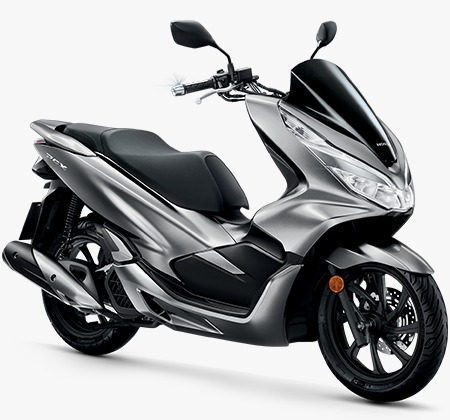
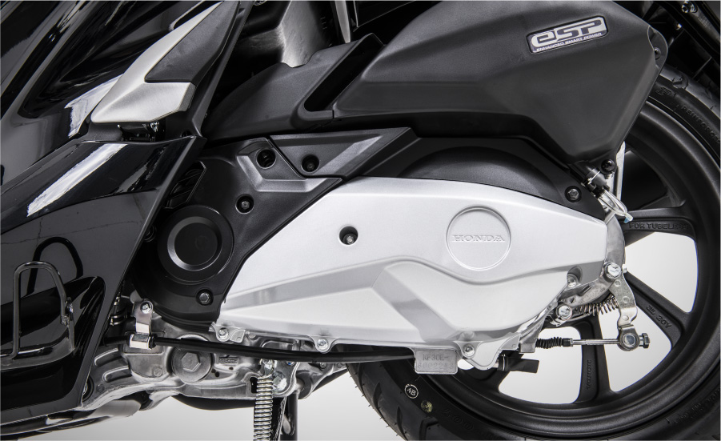
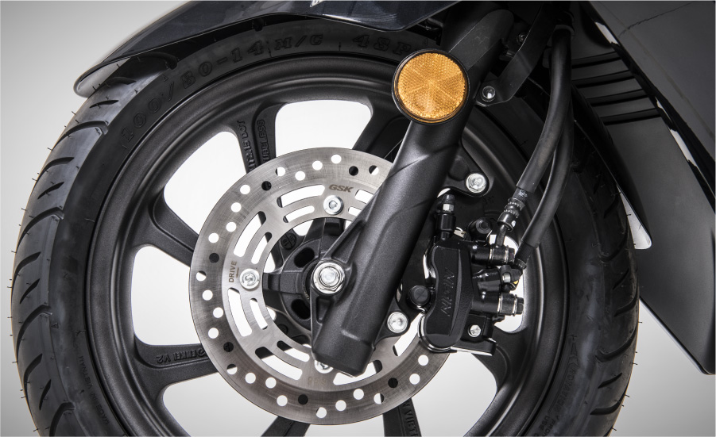
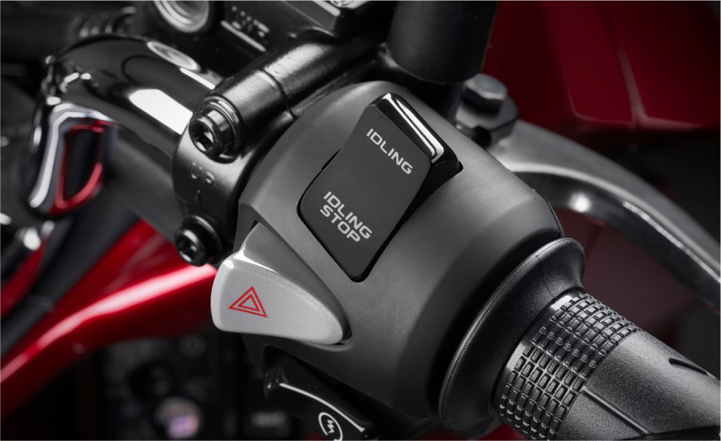
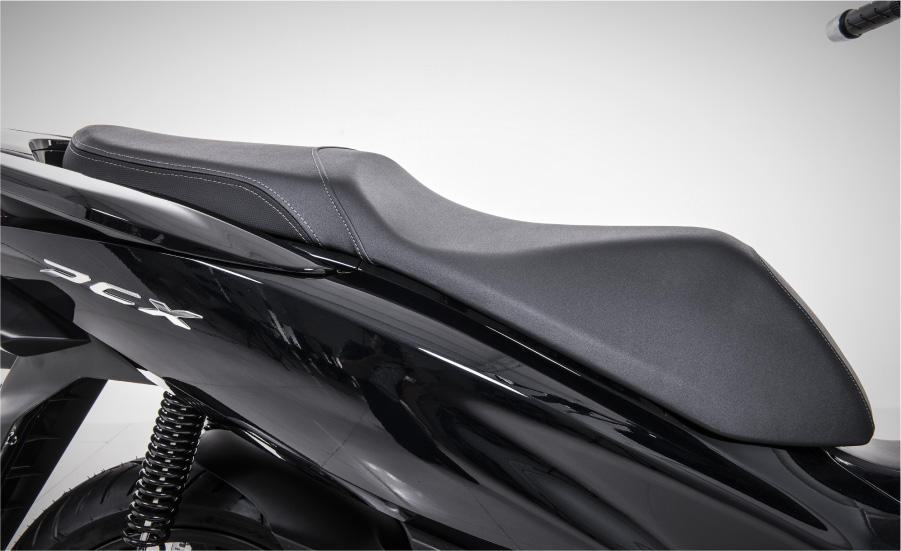

Moderna y cautivadora, ideal como alternativa para moverte por la ciudad, ¿se le puede pedir algo más a una motocicleta? La PCX 150 tiene el tamaño y peso perfecto que la transforman en tu nuevo medio de transporte. ¡Dile adiós al tráfico! Su diseño es inspirado en un estilo de vida urbano y sofisticado, así que puedes llevar tu estilo abordo con gran comodidad.
Motor:

Su motor de partida (GCA sin escobillas) está electrónicamente controlado, montado directamente en el cigüeñal, que sirve como alternador y motor de partida. Éste gira directamente y elimina cualquier ruido de acoplamiento de engranajes. El motor se apaga después de 3 segundos de estar detenido, y vuelve a activarse al accionar el acelerador, esto ayuda al ahorro combustible al no usar el motor durante el tiempo estacionado.
Frenos:

Porque está pensada para moverse por la ciudad, un punto importante es la seguridad sobre las 2 ruedas. El sistema de freno combinado funciona al jalar la palanca izquierda, no sólo se activa el freno trasero, sino que también el delantero, lo que permite una detención segura, suave y corta (desarrollo original de Honda).
Stop and Go: (Idling Stop)

El motor se apaga después de 3 segundos de estar detenido, y vuelve a activarse al accionar el acelerador, esto ayuda al ahorro combustible, al no usar el motor durante el tiempo estacionado.
Asiento:

Su baúl cuenta con un gran espacio en el que puedes guardar un casco integral gracias a su amplio asiento de doble nivel, le permite al piloto y a su acompañante la máxima comodidad a bordo.